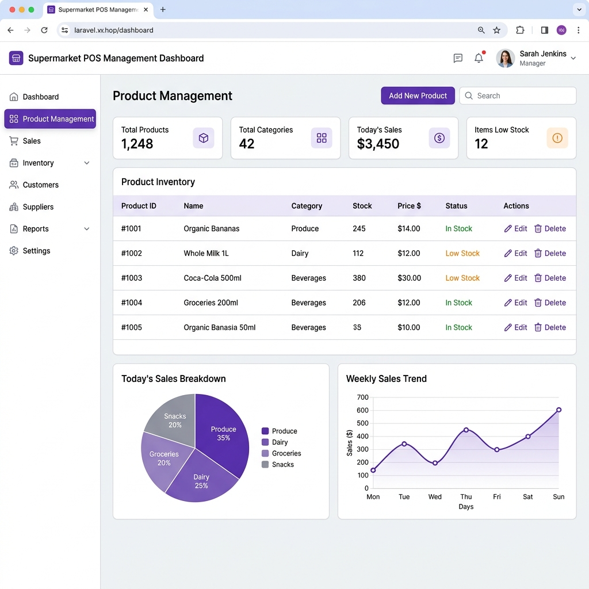
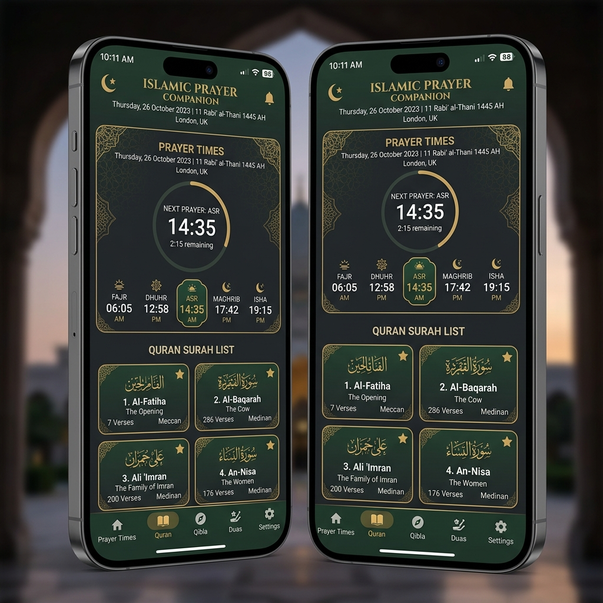
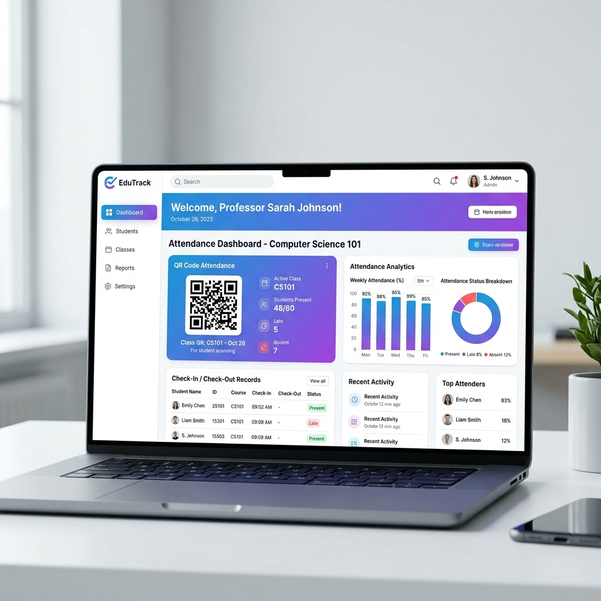
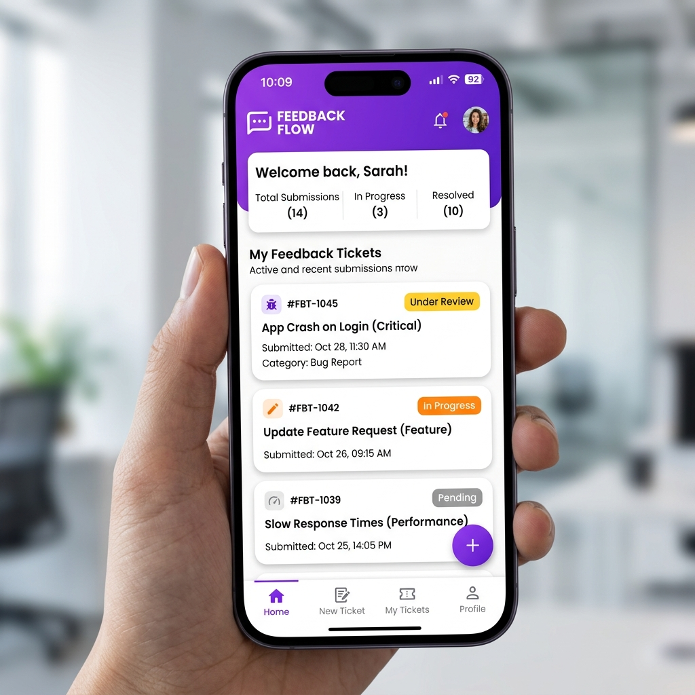
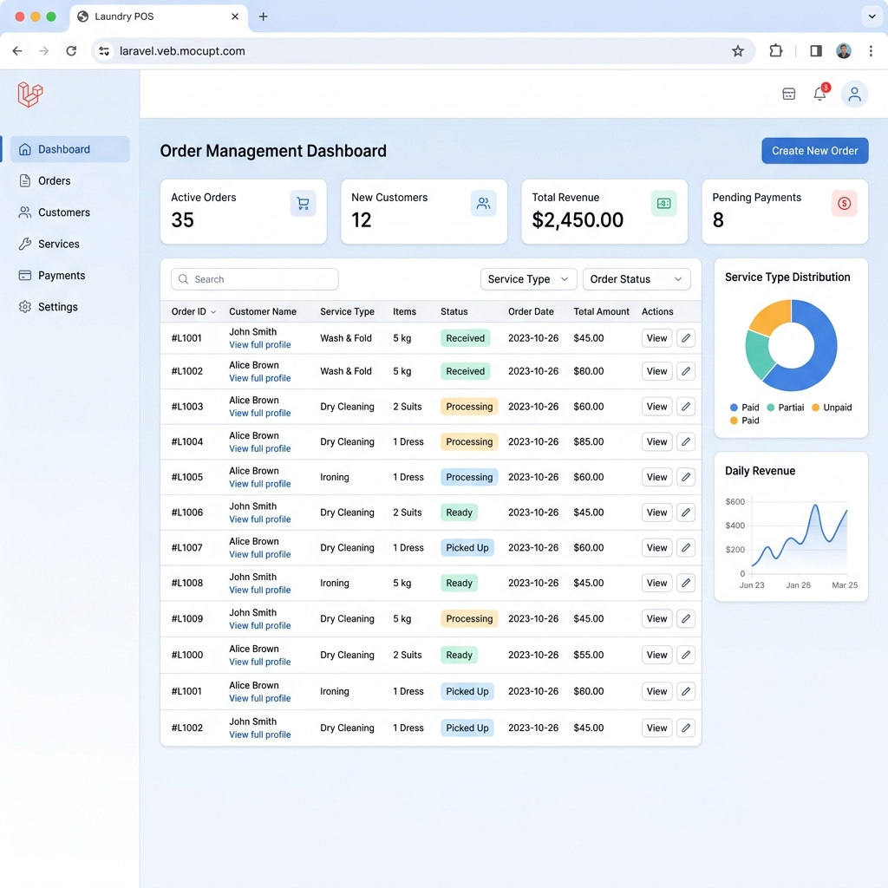
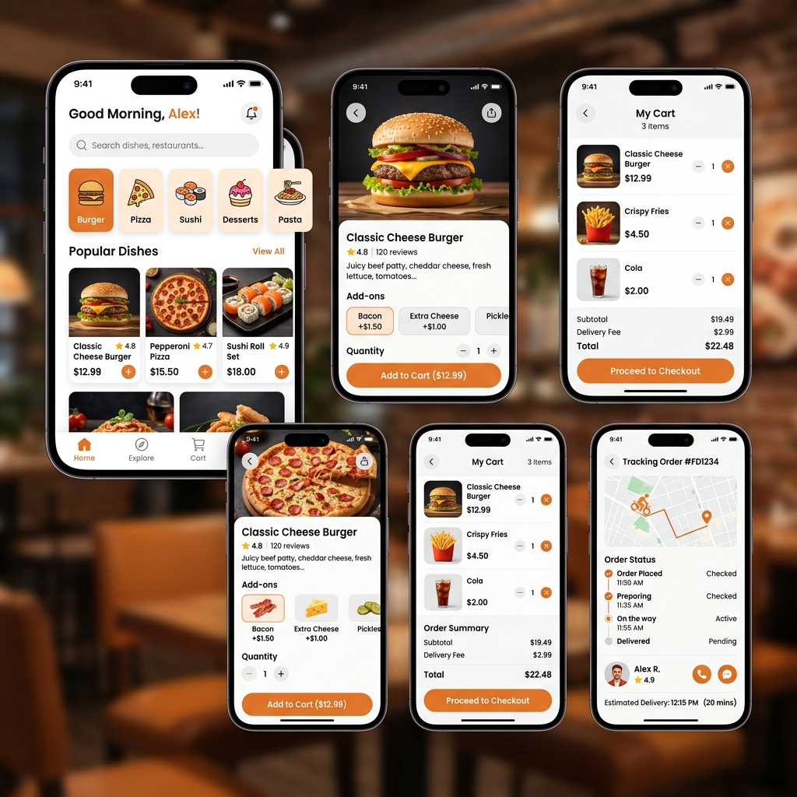

Halo, Saya Turky.K.W
Seorang
Tentang Saya
Mari berkenalan lebih dekat
Siapa Saya?
Saya adalah seorang pelajar di SMK Negeri 1 Cianjur, jurusan PPLG/RPL. Saya masih dalam proses belajar dan mencoba mengembangkan diri di bidang teknologi. Di sini, saya berbagi beberapa hasil kerja yang saya buat selama perjalanan belajar saya. Saya terus berusaha untuk belajar lebih baik setiap harinya.
Proyek
6+ Selesai
Repository
15 Public
Nama: Turky Khalid Walidat
Email: walitur8@gmail.com
Sekolah: SMK Negeri 1 Cianjur
Jurusan: PPLG / RPL
Keahlian Saya
Kemampuan dan keahlian saya
Laravel
Pengalaman membangun aplikasi web fullstack dengan Laravel, termasuk POS, sistem absensi, dan aplikasi CRUD.
Flutter / Dart
Pengembangan aplikasi mobile cross-platform menggunakan Flutter dan Dart untuk berbagai proyek.
HTML & CSS
Pengalaman membuat struktur website yang semantik, responsif, dan menarik secara visual.
Database
Pengalaman dengan MySQL dan sistem database relasional dalam proyek Laravel dan aplikasi lainnya.
UI/UX Design
Kemampuan membuat desain antarmuka yang intuitif dengan tools seperti Figma.
Portofolio Saya
Karya terbaik yang telah saya buat






Hubungi Saya
Saya senang mendengar dari Anda
Lokasi
Kab. Cianjur, Jawa Barat
walitur8@gmail.com
Telepon
+62 852 2036 2620